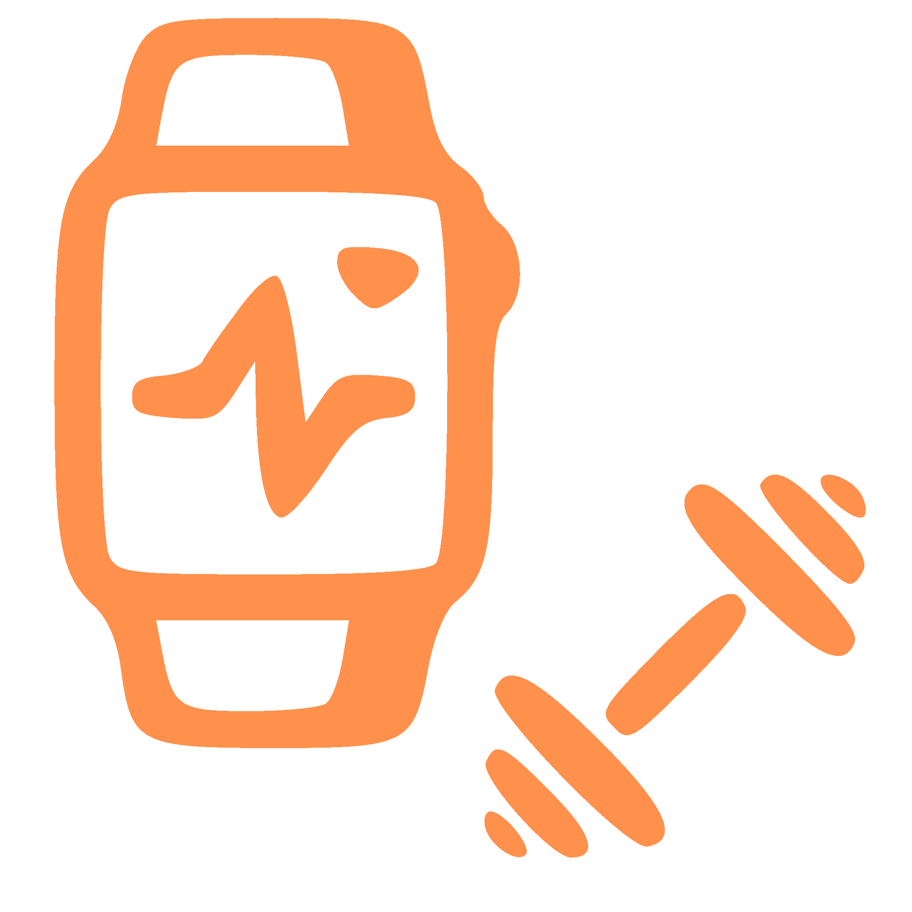

G-Tools
Apps von Jan Grünwald.

GymTimer
Trainings-Timer.
Werbevideo und Store-Links folgen.
Video
Stores
NutriTimer
NutriTimer erweitert Open Food Facts nur lesend, privat pro Konto.
Werbevideo und Store-Links folgen.
Video
Stores
StraightCook
StraightCook sammelt Rezepte.
Werbevideo und Store-Links folgen.
Video
Stores
Time2Garden
Garten-Timer.
Werbevideo und Store-Links folgen.
Video
Stores